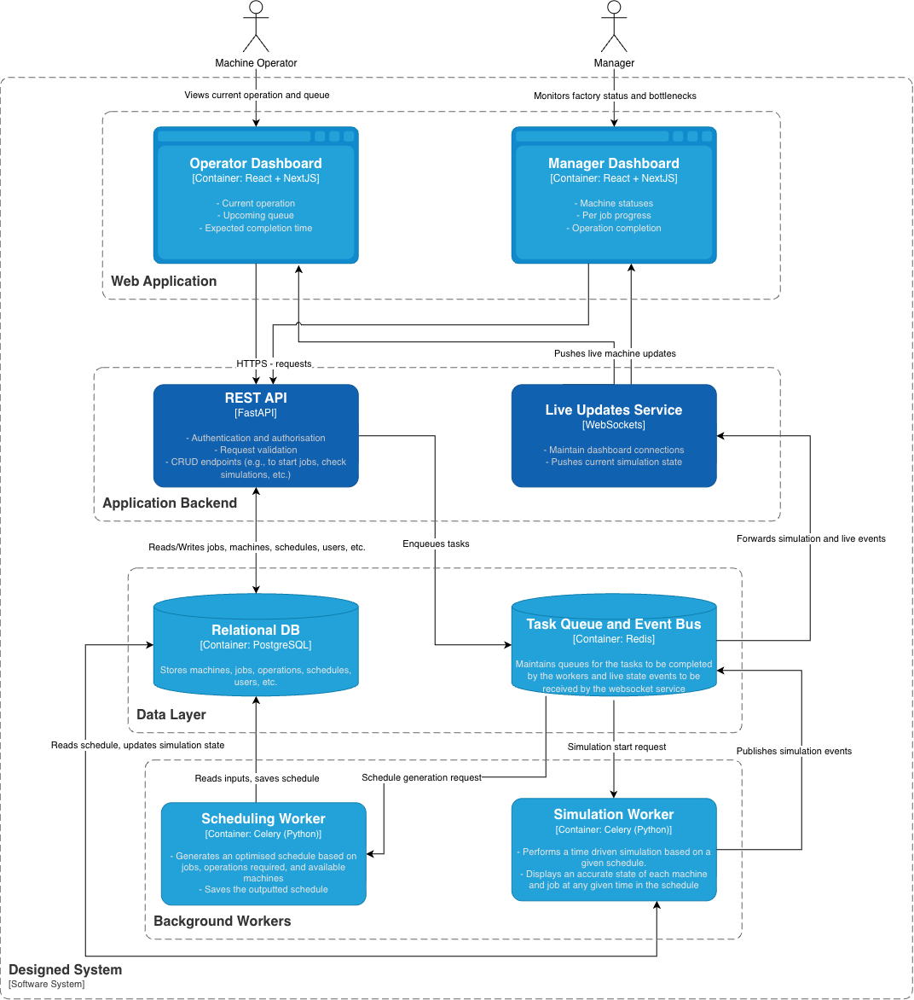
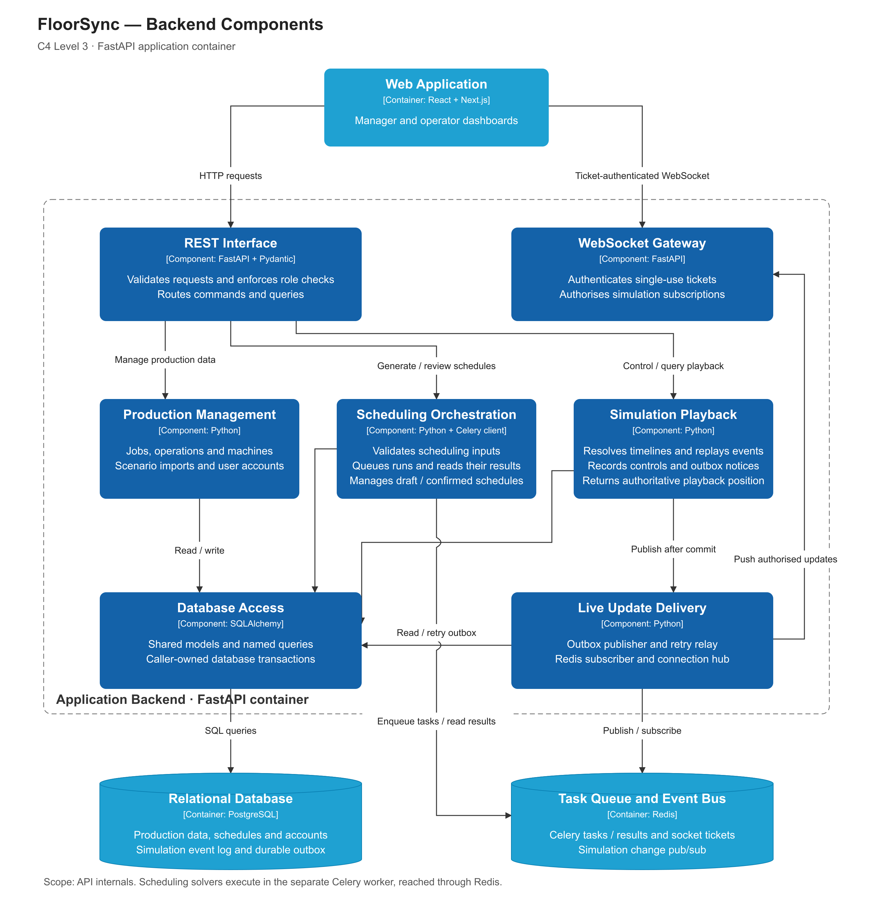
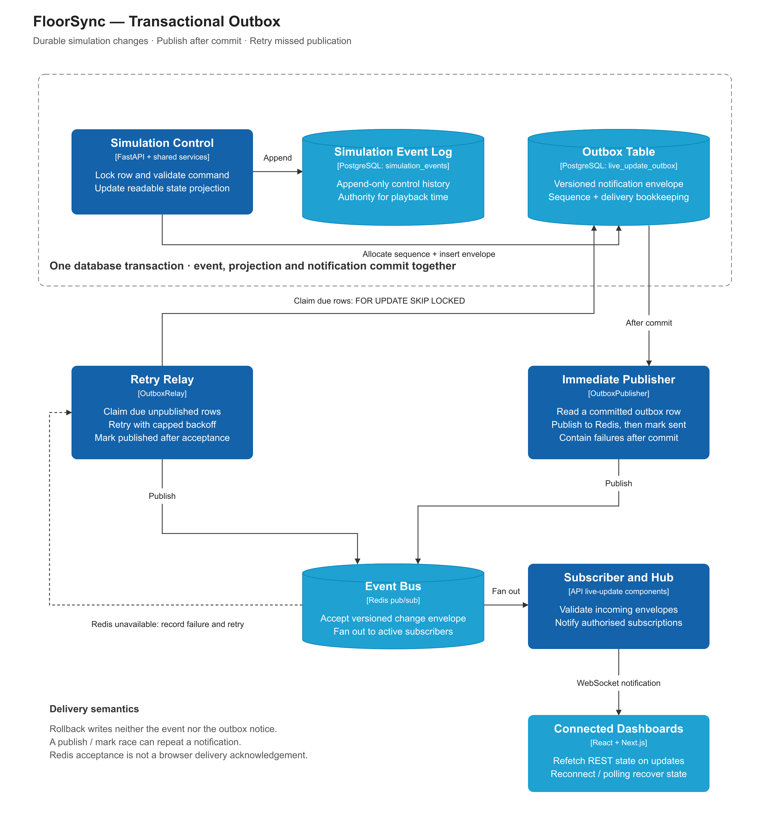
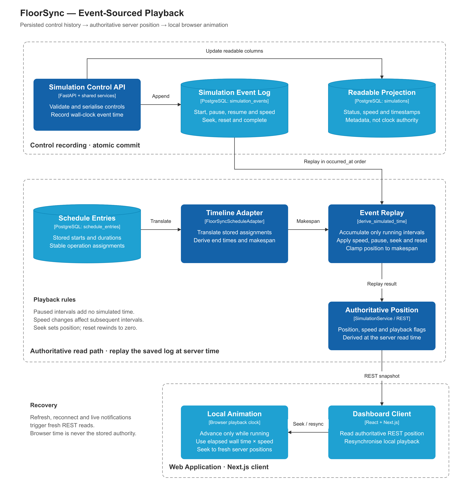
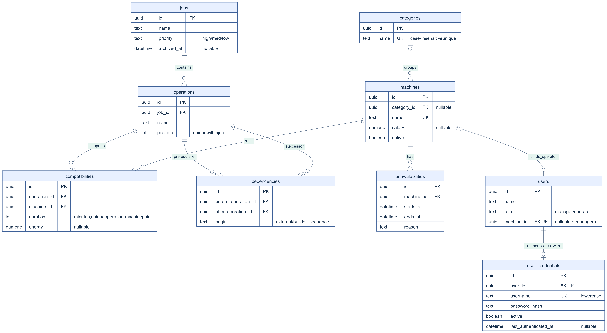
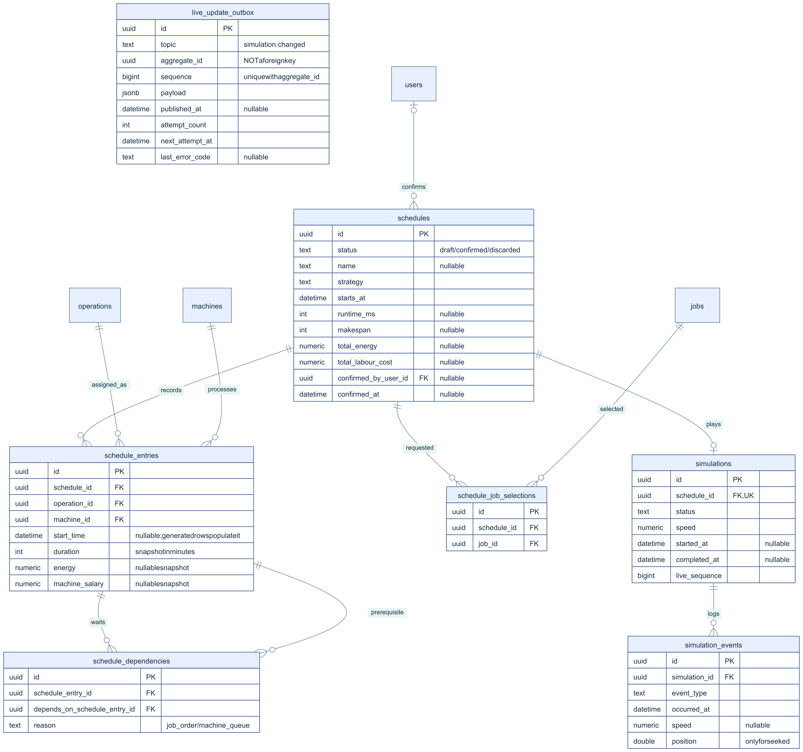
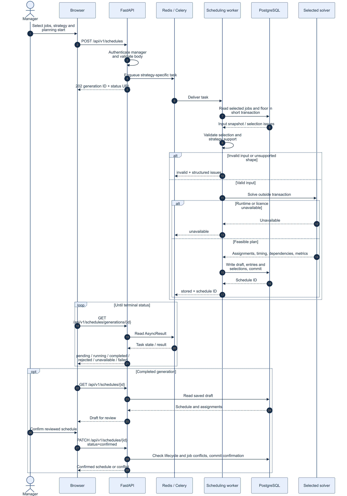
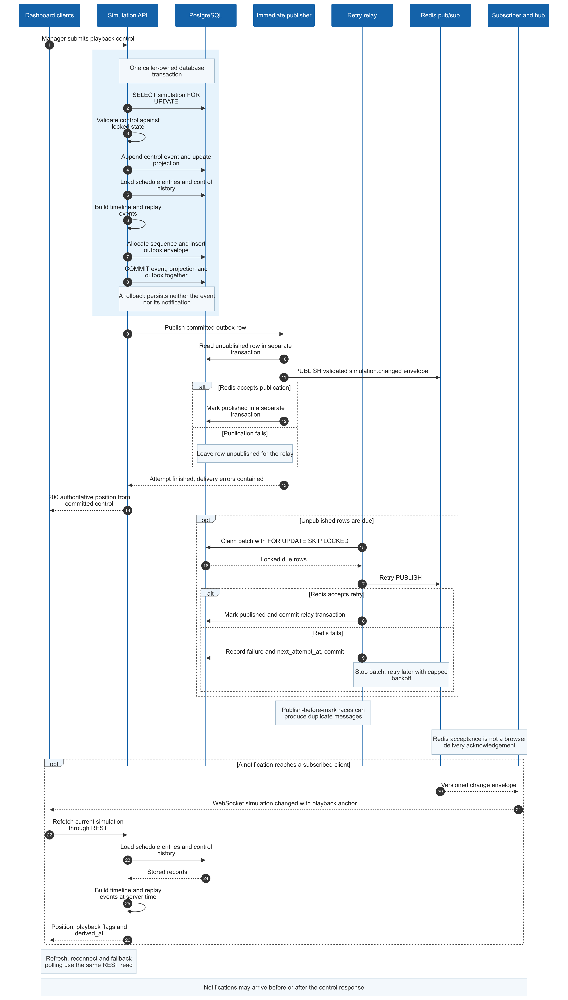

System diagrams
Architecture, backend components, architectural patterns, data and the two key runtime flows. Select Actual size to inspect a diagram, or open the final image.
System architecture
FloorSync architecture diagram supplied by the team.

Backend components
A closer view of the FastAPI container: REST and WebSocket entry points, production management, scheduling orchestration, simulation playback, database access and live-update delivery. Next.js, PostgreSQL and Redis remain outside this container. The scheduling solver runs in the separate worker. Components group related implementation modules; transport glue and routine dependencies are simplified.

Transactional outbox
The control event, readable simulation projection and outbox notification commit in one database transaction. Immediate publishing and the retry relay run after that commit. Redis acceptance marks publication, not browser receipt. Clients refetch REST state when notified.
ADR 0017 · Transactional outbox and versioned notifications

Event-sourced playback
Control history is the authority for simulated time. The server replays saved events against the schedule makespan at read time. Stored status and speed are a readable projection. The browser animates between fresh authoritative REST positions and resynchronises after refresh, reconnect or live notifications.
ADR 0010 · Event-sourced simulated time

Production and account data
Key fields are shown; all tables also have UUID identifiers and timestamp mixins. Compatibility owns machine-specific operation duration. Operation.position is display order; Dependency owns precedence, including cross-job edges. An operator must have one machine; a manager must have none.

Schedules, simulation and delivery data
Key fields are shown; dashed associations to the outbox are intentionally absent: aggregate_id is not a foreign key. A schedule has at most one simulation. Generated assignment duration and cost are snapshots; end times and machine queue positions are derived. See the production ERD for jobs, operations, machines and users.

Generate and review a schedule
The API returns before solving. Each worker read/write transaction is short; inference holds no database transaction. A successful result is a draft that requires a separate manager confirmation. Exact solver time limits can return a feasible plan without proving optimality.

Simulation control and durable live updates
Shows the shared control/outbox commit, a best-effort immediate publication, independent relay retries with SKIP LOCKED, and authoritative REST recovery. Publish/mark races can repeat notifications. The current browser refetches on updates rather than applying event deltas; notifications may arrive before or after the control response.
